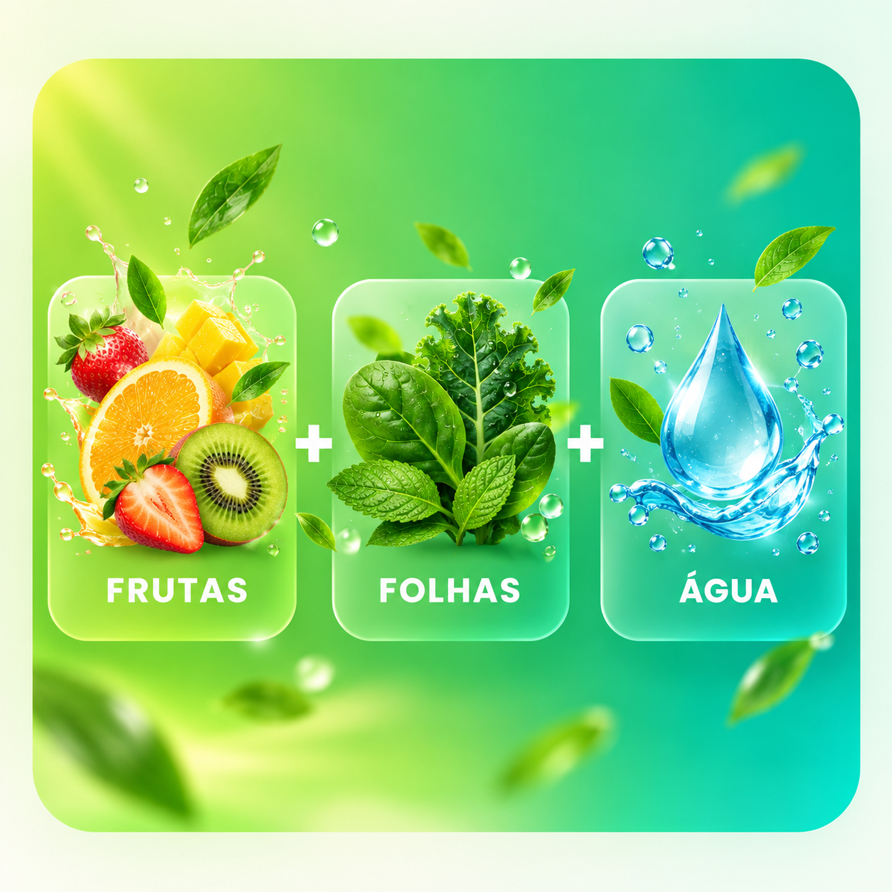

Os primeiros cards combinam seu cadastro com o que você vem explorando no portal.
SUCOS DETOX
20 combinações, cada uma com um sabor próprio.
Frutas, folhas, raízes, ervas e água em receitas rápidas que entram na sua experiência conforme suas preferências. Aqui, “detox” é apenas o nome popular da seção: estes sucos não eliminam toxinas e não substituem refeições.

BIBLIOTECA DE SUCOS
Escolha pelo sabor — ou deixe o portal priorizar por você.
As 20 receitas foram revisadas individualmente. O portal mantém a ordem personalizada pelo seu perfil e comportamento, e você também pode filtrar pelo perfil de sabor.
Sobre o termo “detox”
O organismo já possui sistemas naturais de processamento e eliminação de substâncias, principalmente fígado e rins. Nesta área, “detox” é um nome de categoria para bebidas com ingredientes frescos, sem alegações de “limpeza” do corpo.
Use os filtros para encontrar opções cítricas, refrescantes, frutadas, verdes ou com gengibre.
Cada receita traz uma dica própria de textura, acidez ou intensidade e uma variação simples.
Apresentação visual concluída
Cada receita agora usa uma imagem única no padrão oficial: ingredientes à esquerda, bebida pronta à direita e identificação na faixa inferior.
Nenhum suco corresponde a este filtro.